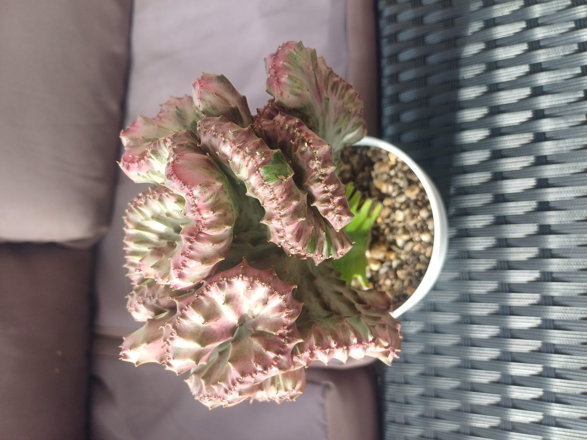

Nazwa zwyczajowa: wilczomlecz grzebieniasty / koralowiec
Rodzina: Euphorbiaceae
🌍 Występowanie
Naturalna forma Euphorbia lactea pochodzi z tropikalnych rejonów Azji — głównie Indii i Sri Lanki. Odmiana 'Cristata' jest formą ogrodniczą, uzyskiwaną przez mutację i szczepienie.
🌱 Opis morfologiczny
- Kształt: wachlarzowata, pofałdowana struktura przypominająca koralowiec
- Wysokość: zwykle do 30–50 cm
- Kolor: od jasnozielonego po fioletowy, często z różowymi lub kremowymi obrzeżami
- Łodyga: szczepiona na prostym pniu Euphorbia lactea lub Euphorbia neriifolia
- Sok: biały, trujący; może powodować podrażnienia skóry
🌸 Kwiaty
- Kolor: niewielkie, żółtawe
- Kształt: niepozorne, pojawiają się rzadko
- Okres kwitnienia: nieregularny; roślina uprawiana głównie dla pokroju
🍒 Owoce i rozmnażanie
- Owoce: bardzo rzadkie; nie występują w formie szczepionej
- Rozmnażanie: przez szczepienie; forma 'Cristata' nie rozmnaża się z nasion
🌞 Wymagania uprawowe
- Światło: jasne, rozproszone; unikać bezpośredniego południowego słońca
- Podłoże: lekkie, dobrze przepuszczalne; mieszanka ziemi kaktusowej z perlitem
- Wilgotność: umiarkowana; podlewać po całkowitym wyschnięciu podłoża
- Temperatura: minimum ok. 15°C; nie toleruje chłodu i przeciągów
🏆 Ciekawostki
Ze względu na swój fantazyjny wygląd przypominający koralowce, Euphorbia lactea 'Cristata' jest popularna w nowoczesnych aranżacjach wnętrz. Często mylona z kaktusem, choć należy do wilczomleczy. Wymaga ostrożności przy pielęgnacji ze względu na trujący sok.
📷 Zdjęcia z prywatnej kolekcji
Prezentowane poniżej fotografie pochodzą z prywatnych zbiorów...
